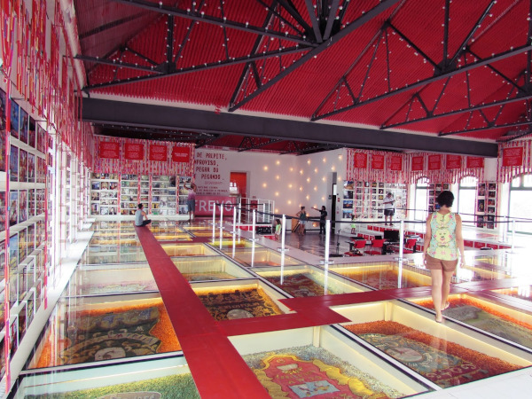
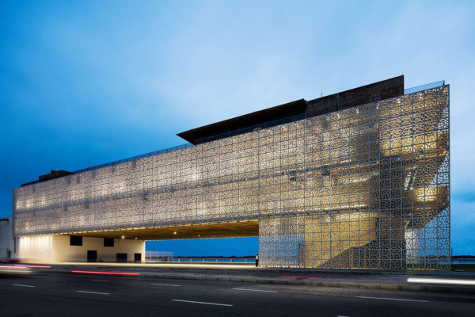

Outros grandes pontos turisticos de Recife-PE; Paço do Frevo e Cais do Sertão
Paço Frevo
Localizado no coração do Recife Antigo, o Paço do Frevo é uma celebração vibrante da cultura pernambucana. Este espaço cultural único dedica-se a preservar e compartilhar o frevo, um gênero musical e de dança intrinsecamente ligado à identidade do Nordeste. Com exposições interativas e envolventes, o museu narra a história e a evolução do frevo, destacando a energia contagiante das suas danças e a riqueza das suas melodias. Através de exibições, workshops e apresentações ao vivo, o Paço do Frevo transmite a paixão e a vitalidade dessa tradição, mantendo-a viva para as gerações atuais e futuras.
Cais do Sertão
Em uma jornada pela cultura e paisagens do sertão nordestino, o Cais do Sertão em Recife Antigo se destaca como um espaço de exploração e descoberta. O museu é uma homenagem vibrante às raízes profundas dessa região, oferecendo experiências interativas que mergulham os visitantes nas histórias, músicas e tradições do sertão. Do artesanato à música, das lutas à alegria do povo sertanejo, o Cais do Sertão ilustra as complexidades e a resiliência desse ambiente singular. Com suas exposições cativantes e design inovador, o museu capta a essência do sertão e a compartilha com o mundo, celebrando um legado de autenticidade e força.